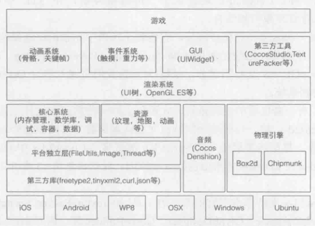

Tear Engine
Table of Contents
Build a project
Why need an engine
为什么要专门开发游戏引擎？为什么要使用游戏引擎来开发游戏？游戏引擎的优势在哪？ 简言之：开发游戏不是绝对需要引擎的。但这建立在两个基础上，1）这个游戏很简单，2）你在过往的项目中积累了大量的代码。 游戏引擎本质上就是一堆游戏开发库，用来节省游戏开发的时间。使用统一的引擎，利于团队在统一的标准上开发游戏，节约团队开发时间；引擎跨平台，节约游戏移植时间；游戏逻辑与基础功能分离，开发效率更高。
Choice

引擎只是一个框架，一个库，所以实现方式多样，技术选型也受多方面影响。比如语言方面，c,c++,c#,java,python等等都有，然后是硬件平台，PC，MAC，移动，主机等等，还有系统，windows，linux，macos，ios，android，xbox，ps4等等。 这里，我的开发选择是用C++开发一个跨平台引擎，至少支持windows和linux。使用emacs编辑，premake其他工程文件。
Create engine core lib
install dependence
- glfw3
- linux/macos
- sudo apt-get install cmake xorg-dev
- git clone https://github.com/glfw/glfw.git
- cd glfw
- mkdir build
- cd build
- cmake ../
- make && sudo make install
- windows
- go to http://www.glfw.org/download.html
- download windows pre-compiled binary and unpack
- go to your visual studio installed path, in VC folder
- put GLFW to include folder, glfw3.lib glfw3dll.lib to lib folder, glfw3.dll to bin folder
- linux/macos
- premake
为了管理不同平台的工程文件，我们采用premake构建工具，它与cmake类似，但用lua代码进行配置。
window framework
游戏引擎为游戏服务。游戏运行于操作系统上，它首先是应用程序，然后才是游戏。所以，游戏首先需要的是用于展示内容的“窗口”。窗口在不同的操作系统上有不同的称呼，所以建立窗口的方式也是操作系统强相关的。 这里我采用 GLFW 库来简化窗口的创建。
- create a window
现在我们使用glfw，用最少的代码创建一个空窗口。
#include <GLFW/glfw3.h> #include <stdlib.h> #include <stdio.h> static void error_callback(int error, const char *description) { fprintf(stderr, "TxxE Error: %s\n", description); } static void key_callback(GLFWwindow *window, int key, int scancode, int action, int mods) { if(key == GLFW_KEY_ESCAPE && action == GLFW_PRESS){ glfwSetWindowShouldClose(window, GLFW_TRUE); } } int main(void) { glfwSetErrorCallback(error_callback); if(!glfwInit()){ return -1; } GLFWwindow *window = glfwCreateWindow(800, 600, "Txx", NULL, NULL); if(!window){ glfwTerminate(); return -1; } glfwSetKeyCallback(window, key_callback); while(!glfwWindowShouldClose(window)){ glClear(GL_COLOR_BUFFER_BIT); glfwSwapBuffers(window); glfwPollEvents(); } glfwDestroyWindow(window); glfwTerminate(); return 0; }
- build a application
在ubuntu上快速编译运行一下。
g++ main.cpp -lglfw3 -lX11 -lXrandr -lXinerama -lXi -lXxf86vm -lXcursor -lGL -lpthread -ldl
稍微正常的人都不会愿意每次编译都写上这么一段，所以makefile文件是必须的。而为了跨平台，又需要一个能一键生成各个平台的工程文件。所以我们使用premake来生成各个平台的工程文件。配置信息见 premake5.lua。
engine framework
游戏最基本的运行逻辑， 加载 ， 初始化 ， 更新 ， 结束 。我们的引擎会在必要的时候调用这四个操作来驱动游戏运行。
extern bool game_load(); extern bool game_init(); extern void game_update(); extern void game_end();
所有基于本引擎的游戏必须实现这四个函数。
engine lib
现在我们来将引擎做成一个库，真正的游戏就建立在这个库之上。
// Tear.h #ifndef __TEAR_H__ #define __TEAR_H__ extern bool game_load(); extern bool game_init(); extern void game_update(); extern void game_end(); namespace Tear{ class Engine{ int m_window_width; int m_window_height; public: Engine(); ~Engine(); int init(int width, int height); void update(); void close(); int getWindowWidth(){ return this->m_window_width; } void setWindowWidth(int value){ this->m_window_width = value; } int getWindowHeight(){ return this->m_window_height; } void setWindowHeight(int value){ this->m_window_height = value; } }; }; // global engine object extern Tear::Engine *g_tear_engine; #endif
// Tear.cpp #include "Tear.h" namespace Tear{ Engine::Engine():m_window_width(800), m_window_height(600) { } Engine::~Engine() { } int Engine::init(int width, int height) { if(!game_init()){ return 0; } return 1; } void Engine::update() { game_update(); } void Engine::close() { game_end(); } }
// main.cpp #include "Tear.h" #include <GLFW/glfw3.h> #include <cstdlib> #include <cstdio> static void error_callback(int error, const char *description) { fprintf(stderr, "glfw Error: %s\n", description); } static void key_callback(GLFWwindow *window, int key, int scancode, int action, int mods) { if(key == GLFW_KEY_ESCAPE && action == GLFW_PRESS){ glfwSetWindowShouldClose(window, GLFW_TRUE); } } Tear::Engine *g_tear_engine; int main(void) { glfwSetErrorCallback(error_callback); if(!glfwInit()){ return -1; } g_tear_engine = new Tear::Engine(); if(!game_load()){ fprintf(stderr, "game load fail\n"); return 0; } glfwWindowHint(GLFW_CONTEXT_VERSION_MAJOR, 3); glfwWindowHint(GLFW_CONTEXT_VERSION_MINOR, 3); glfwWindowHint(GLFW_OPENGL_PROFILE, GLFW_OPENGL_CORE_PROFILE); glfwWindowHint(GLFW_RESIZABLE, GL_FALSE); GLFWwindow *window = glfwCreateWindow(g_tear_engine->getWindowWidth(), g_tear_engine->getWindowHeight(), "Tear Engine", nullptr, nullptr); if(!window){ fprintf(stderr, "Failed to open GLFW window\n"); glfwTerminate(); return -1; } glfwSetKeyCallback(window, key_callback); if(!g_tear_engine->init(g_tear_engine->getWindowWidth(), g_tear_engine->getWindowHeight())){ fprintf(stderr, "game engine init fail\n"); return 0; } while (!glfwWindowShouldClose(window)){ glfwPollEvents(); g_tear_engine->update(); glfwSwapBuffers(window); } g_tear_engine->close(); delete g_tear_engine; glfwDestroyWindow(window); glfwTerminate(); return 0; }
Test
引擎已经弄好，现在来写一个游戏吧。
// example_01.cpp #include "Tear.h" bool game_load() { g_tear_engine->setWindowWidth(640); g_tear_engine->setWindowHeight(480); return true; } bool game_init() { return true; } void game_update() { } void game_end() { }
运行成功后会出现一个黑色的窗口，这一次的窗口已经不再是纯粹的窗口了。它本质上已经变成了通过引擎驱动起来的游戏。通过在上述四个gamexx函数里不断添加游戏逻辑，就能产生不同的游戏。
Rendering
游戏最重要的元素当属视觉效果，毕竟人类70%的信息获取也是视觉提供的。游戏的画面在图形学中称为 渲染（Rendering） 。 游戏引擎在窗口支持之后的第一要务就是图形渲染支持。
图形API
我们要在窗口上画图，做渲染，离不开硬件的支持。最简单的画图就是直接往显示器内存写像素值。而今，随着技术的发展，GPU的普及，绘图的工作 基本由GPU负责。为了避免直接操作硬件，从而抽象出各类图形API，提高绘图的开发效率。下面是当前主流的几个图形API。
- OpenGL： 传承自SGI，最早的专用图形API，属于开放性标准。因为跨平台，多用于专业领域，游戏领域甚少使用。
- Direc3D： 微软私有标准，仅限于windows，XBOX,winphone平台。桌面图形API的霸主，设计精良，效率一流，桌面游戏开发的不二之选。
- OpenGL ES： 精简版 OpenGL，专为小型嵌入式设备设计。因移动平台崛起而风靡。
- Metal： 苹果自家最新私有标准，为改良OpenGL ES诞生。
- Vulkan： 下一代 OpenGL 标准，统一桌面移动两种 GL，降低驱动层消耗，最大化利用硬件能力。
使用 OpenGL/OpenGL ES
由于当前移动游戏崛起，以前不受游戏开发待见的OpenGL因为跨平台性焕发了第二春。所以，我们的游戏引擎的图形API支持就从OpenGL 开始。
GLEW（桌面）
同前面所使用的glfw类似，glew是简化使用OpenGL的一个库。因为OpenGL只是一个标准/规范，具体的实现是由驱动开发商针对特定显卡实现的。由于OpenGL驱动版本众多，它大多数函数的位置都无法在编译时确定下来，需要在运行时查询。任务就落在了开发者身上，开发者需要在运行时获取函数地址并将其保存在一个函数指针中供以后使用。一般这步操作由操作系统实现。但OpenGL当前版本已经到了4.x（终止开发，转向vulkan），而部分操作系统没有及时支持高版本的API。其中最狠的就是windows上，只支持最古老的OpenGL1.1。所以我们需要绕过操作系统，在运行时查询函数地址直接使用显卡提供的高版本API。而取函数地址的方式因平台各异，所以GLEW封装了这层操作，向上提供纯粹的OpenGL接口，隐藏平台差异，版本差异，简化使用GL。
- install
- linux
- git clone https://github.com/nigels-com/glew.git glew
- cd glew/auto
- make
- cd ..
- sudo make install
- windows
- download pre-binary
- linux
EGL（移动）
移动端使用OpenGLES，但GLES本身只是一个操作GPU的API，不具备与平台Native层交互的能力。EGL因此而生——作为GLES与Native窗口的桥梁。EGL 是 OpenGL ES（嵌入式）和底层 Native 平台视窗系统之间的接口。EGL API 是独立于OpenGL ES各版本标准的独立API ，其主要作用是为OpenGL指令创建 Context 、绘制目标Surface 、配置Framebuffer属性、Swap提交绘制结果等。 此外，EGL为GPU厂商和OS窗口系统之间提供了一个标准配置接口。一般移动操作系统对GLES的支持非常及时，所以GLEW就不是很必要了。 对于android，可以使用SDK提供的GLSurfaceView简化开发。对于ios，为了适应cocoa框架，苹果做了一点修改，叫EAGL。具体使用参阅各自平台的文档。
绘制一个三角形
使用OpenGL绘制一个三角形应该是“Hello World”级别的GL程序。
Pipeline
OpenGL是一个3D图形API，所以其中任何事物都位于2D空间中。而我们接受输出的对象（窗口、屏幕）却是2D的。所以整个OpenGL的大部分工作就是将3D世界转化为2D像素数组。这个流程叫 图形流水线（Graphics Pipeline） ，一堆原始的三维图形数据，经过流水线各个阶段的处理，最终输出显示在屏幕上。

就像工厂里的流水线一样，渲染流水线也分多个阶段，每个阶段接收上个阶段的输出作为输入，然后向后输出相应的数据。每一个阶段拆分的足够模块化，使得任务可以高度并行。同时，GPU本身是个多处理器架构，一个GPU可能同时包含上千的流处理器核心。每个核心运行 shader（着色器） ，处理传入的数据，互不干扰。 流水线中的一部分允许开发者直接控制，意味着这些阶段GPU核心可以运行开发者自己写的shader。这样的好处在于，对于渲染结果，开发者可以进行更细致的控制。
可编程着色器
可编程着色器指的就是可以由开发者自己编写的着色器，也就是平时说的写shader。与之对应的就是固定着色器，也叫默认着色器，开发者不能用自己的shader替换，只能通过API进行开关控制。 现代图形API基本都要求开发者至少提供一个 顶点着色器（vertex shader） 和一个 片段着色器（fragment shader） 。（其他API可能名字不同，比如D3D里叫顶点着色器和像素着色器。）为什么要必须提供呢，因为图形API对这两个阶段没有提供默认shader了，所以需要开发者提供。下面提供两个最基础的着色器。
// vs #version 330 core layout (location = 0) in vec3 position; void main() { gl_Position = vec4(position.x, position.y, position.z, 1.0); }
// fs #version 330 core out vec4 color; void main() { color = vec4(1.0f, 0.5f, 0.2f, 1.0f); }
掌握渲染流水线和可编程着色器两个概念，然后配合OpenGL提供的API，就可以绘制出你的第一个一个三角形。对于移动端，可参阅网上的资料，搜索关键字 EGL, OpenGLES, 三角形 。
纹理
图形由顶点构成，图形的颜色也由顶点的颜色决定。我们为每个顶点设置颜色之后，其他非顶点位置的颜色则是自动插值出来的。理论上，你可以设置足够密集的顶点（与像素点一样多），然后为每个顶点逐一设置一个颜色，就可以表现出足够细节的图形。但很明显，这种办法太麻烦，额外需求太高。 纹理（Texture） 应运而生。纹理一般作为2D图片出现（1D,3D的也有），用来映射到图形上添加图形的细节。只需指定有限的映射点，即可生成足够的细节。

所谓映射（Map），需要指定三角形每个顶点各自对应纹理的哪个部分。每个顶点都会关联一个纹理坐标，用于标明从纹理采样点。纹理坐标起于左下角的(0,0)，终于右上角的(1,1)。设定之后，图形的其他位置会做对应的插值。 图形硬件只认识纹理格式，而平时我们见的图片一般是png,jpg之类的图像格式。所以要使用纹理，首先要将图像文件加载，解析并生成纹理。针对图像文件的加载解析，可以参考开源的图像库，或者自己写。移动端可以直接使用系统提供的库。 图像文件经过加载解析后变成原始的图像数据，然后通过OpenGL API将数据生成纹理。最终通过shader做纹理映射。（记得生成纹理之后，将加载进来的图像数据释放）
// vs #version 330 core layout (location = 0) in vec3 position; layout (location = 1) in vec3 color; layout (location = 2) in vec2 texCoord; out vec3 ourColor; out vec2 TexCoord; void main() { gl_Position = vec4(position, 1.0f); ourColor = color; TexCoord = texCoord; }
// fs #version 330 core in vec3 ourColor; in vec2 TexCoord; out vec4 color; uniform sampler2D ourTexture; void main() { color = texture(ourTexture, TexCoord); }
OpenGL至少保证可同时使用16个纹理单元，每个纹理单元对应一张纹理，即使说可以同时使用至少16张纹理。这样在着色器中可以做常见的多纹理混合效果。